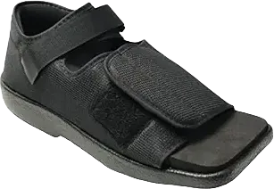

Top 5 Best Shoes After Triple Arthrodesis 2024
Arthrodesis is the medical term for fusion, a procedure in which bones are joined together by removing the cartilage on the joint surface, resulting in the formation of a bone bridge at the joint. In simpler terms, it is the fusion of a joint between two or more bones, rendering the joint immobile.
Triple arthrodesis refers specifically to the fusion of the hindfoot, used to address various deformities and foot problems. After undergoing the triple arthrodesis procedure, the bones are locked in place and become immobile, allowing the joints to function smoothly without causing pain.
-
#1
ProCare Shoe
.webp)
The Pro Care shoe is an excellent option for patients recovering from triple arthrodesis. It offers exceptional flexibility and softness, making it comfortable for those in need. The shoe features a spacious toe box that helps protect the feet effectively.
Designed with an innovative strap system, the Pro Care shoe provides remarkable comfort for users. It automatically adjusts to accommodate both narrow and wide feet, ensuring a secure fit. This shoe is specifically tailored for individuals recovering from surgery and seeking footwear that addresses their unique needs.
Now, let’s discuss the impressive structure of this shoe. Its construction is thoughtfully designed to support the recovery process while ensuring comfort and safety for the wearer. -
#2
United ortho Short Cam Walker
Another fantastic option for triple arthrodesis patients is the fracture shoe, which is crafted from high-quality steel to ensure stability and comfort while standing. This shoe is also made with lightweight plastic materials, enhancing user comfort.
The footwear allows for smooth and flexible movement, adapting easily to the wearer. In the event of an impact, the shoe's design automatically reshapes itself to accommodate the toe, providing additional softness and support.
Structure: This shoe features a steel-based construction that delivers comfort, softness, and flexibility to users. The sole is designed for effective shock absorption, automatically reshaping to fit the new toe position. Additionally, the well-furnished insole design ensures full comfort for the foot. -
#3
The Orthopedic Guys CAM Air Walker
.webp)
After undergoing triple arthrodesis, it’s essential to wear shoes that promote a fast recovery, and the Orthopedic Guys CAM Air Walker is an outstanding option for this purpose. This shoe is designed to provide both flexibility and stability, allowing for comfortable movement during the healing process. One of its key features is a toe guard, which offers protection against minor injuries, ensuring that your recovery is as smooth as possible while minimizing the risk of setbacks.
Additionally, another significant advantage of the Orthopedic Guys CAM shoes is that they hold 100% OSHA (Occupational Safety and Health Administration) approval. This means that the footwear has been thoroughly evaluated and meets rigorous safety standards, ensuring that it is safe for human use and effective in supporting your health during recovery. Knowing that the shoe has been recognized for its safety can provide peace of mind as you begin to regain your mobility.
The design of this shoe also includes an adjustable strap made from high-quality, soft fabric material, which enhances comfort for your feet. This thoughtful design feature allows for a customized fit, accommodating any swelling or changes in your foot size during the healing process. The combination of comfort and stability makes the Orthopedic Guys CAM Air Walker an excellent choice for anyone recovering from triple arthrodesis. -
#4
Mars Wellness Premium Post Op Square Toe Walking Shoe
The Mars Wellness Premium Post Op Square Toe Walking Shoe boasts several impressive features. The manufacturers have designed this shoe to be lightweight while enhancing shock absorption capabilities, providing an excellent experience for users. This thoughtful engineering ensures comfort during recovery.
If you are planning on undergoing physical therapy after triple arthrodesis, this shoe is essential. It offers ample space for your foot, delivering softness and flexibility as you heal. Following surgery on the primary joints of your foot (the talonavicular, calcaneocuboid, and talocalcaneal joints), you may experience a slight loss of strength. The Mars Wellness Premium shoe is specifically designed to provide the stability and flexibility needed during this recovery phase.
STRUCTURE: The rubber used in the sole of this shoe has been carefully selected by the manufacturer to ensure it provides comfort while protecting your foot from harmful shocks. Additionally, the shoe's materials are easy to clean and resistant to water damage, ensuring longevity and practicality in various conditions. -
#5
Air cast Air Select Walker Brace
.webp)
The Air Cast Air Select Walker Brace/Walking Boot is an outstanding choice for individuals recovering from triple arthrodesis, providing both comfort and stability. This shoe is versatile, catering not only to patients who have undergone triple arthrodesis but also to those who have experienced injuries to their foot tissues. Its design addresses the unique needs of various foot conditions, ensuring that users can regain their mobility with confidence.
One of the remarkable features of this shoe is its innovative framework. The construction is designed to absorb shocks automatically during walking, effectively minimizing the risk of injury to your foot. This is particularly important for those recovering from surgery or injury, as it provides an additional layer of protection. The high-quality rubber used in the insole contributes significantly to the overall comfort and softness of the shoe, allowing users to wear it for extended periods without discomfort.
STRUCTURE: The shoe's design is exceptional, ensuring that it remains undamaged even when exposed to water. This makes it a practical option for various environments, as it can easily withstand spills or light rain without compromising its integrity. Furthermore, the shoe is easy to clean, which helps maintain its appearance and hygiene. The high-quality materials utilized in its construction not only enhance its aesthetic appeal but also ensure durability, making this walking boot a reliable option for long-term use. Overall, the Air Cast Air Select Walker Brace/Walking Boot stands out as a superior choice for those in need of supportive footwear during their recovery journey.